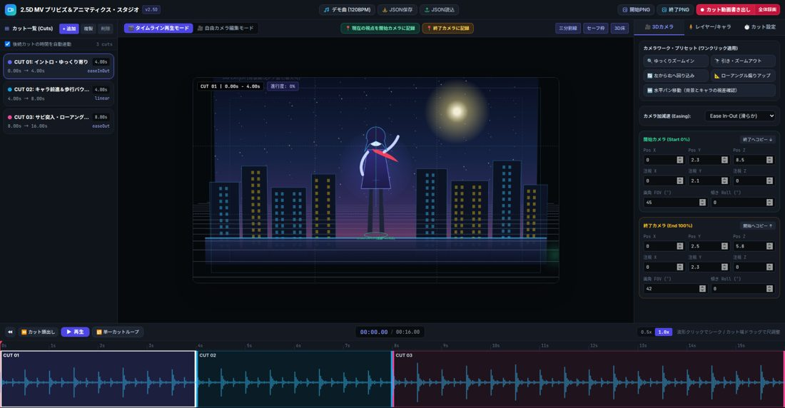
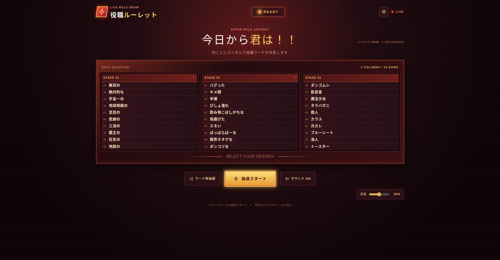
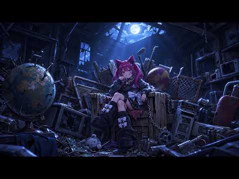

▶ プレイ画面
ゲーム・ツール・動画・診断を作ってます
作ったものへの入口を、ここに全部まとめています。遊ぶ・使う・観る・読むは、下のカードからどうぞ。
個人でゲームやツールを作っている Tosh1 です。ゲームに限らず、ツール制作や動画、診断コンテンツなど、さまざまなものを作っています。
ブラウザでそのまま遊べます / 使えます


観る・読むはこちら

Trinket ArmorYouTubeチャンネル「Tosh1」です。「Trinket Armor」の静止画動画などを公開しています。
フォロー・連絡はこちら